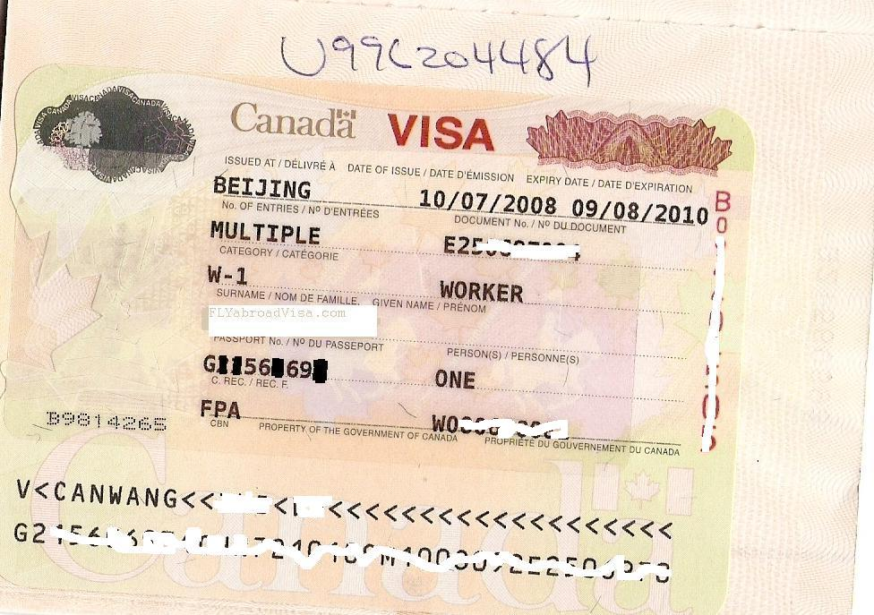

以下只是 FLY 5 年中处理的数百个案例中的几个典型，FLY 处理的疑难案例绝不限于此。其中 FLYabroad 的 专业、经验、负责、创造性、善于思考及解决问题的能力，都是保证这些疑难案例成功的基础和关键。注明的时间为申请时间。
1. 联邦技术移民（2005年3月）
段先生， 英语能力是零起点， 在提交申请资料时没有提交雅思成绩（以免糟糕的雅思成绩直接拒签），使馆发面试通知后， fly为段先生设计了一套面试方案， 并反复的进行陪练， 指导， 面试时为段先生更新了工作资质资料并写了一封情真意切的信件当场给面试移民官； 整个面试过程持续了35分钟，段先生一着急既有的英语都说不出来了， 移民官几乎是用汉语面试完的， 对段先生的表现很满意， 当场表示他面试通过。随后20天收到了使馆的体检表。
2. 加拿大探亲（2007年7月）
王女士， 前往加拿大去探望生孩子的儿媳， 儿子是独子， 第一次通过移民代理公司申请拒签； 找到fly后， fly全面分析王女士的情况， 对薄弱的环节进行补充说明， 并给使馆写了入情入理statement，并对面试问题反复强调； 尽管王女士年岁大记忆力不太好有几个问题回答得不理想， 使馆还是在面试当天发了签证。
3. 加拿大工作签证（2008年6月）
王先生，机械技师， 第一次申请工作签证委托的是一家大的移民公司，以移民倾向拒签2次；fly全面分析王先生的情况后， 在几个方面不和原来递交申请冲突的情况下进行了补充完善润色， 并做了一份有理有据的说明文件， 使馆在收到王先生再次递交的申请10天后通知面试，fly对王先生进行了全面辅导， 7月2日上午顺利通过面试，并签发体检表。 7月3日体检。
4. 加拿大投资移民（2006年12月）
张先生，申请魁省投资移民， 资产情况比较零散， 多为没有购房合同的厂房， 目前的公司已经注销， 存款比较少，是移民代理一再否定的申请； 看到张先生诚恳的样子， fly对张先生的十几年从商经历从头分析， 充分利用既有材料，并做了大量相关工作； 张先生在递档半年后收到面试通知， 面试半个月收到面试通过函。
5. 加拿大团聚（2006年3月）
李先生， 登陆加拿大后由于英语障碍， 短期内找不到合适工作；办理配偶团聚（与配偶年龄相差悬殊， 近20岁）， 在没有经济担保， 没有工作的情况下， fly仔细研读团聚移民法， 帮助李先生准备整理一套完整漂亮的申请资料， 从递交密西沙加担保中心申请到收到北京使馆签证， 整个周期是2个月零1天。
FLYabroad 最新的关于面试辅导等的签证申请案例请见：http://www.flyabroadvisa.com/case/ 。